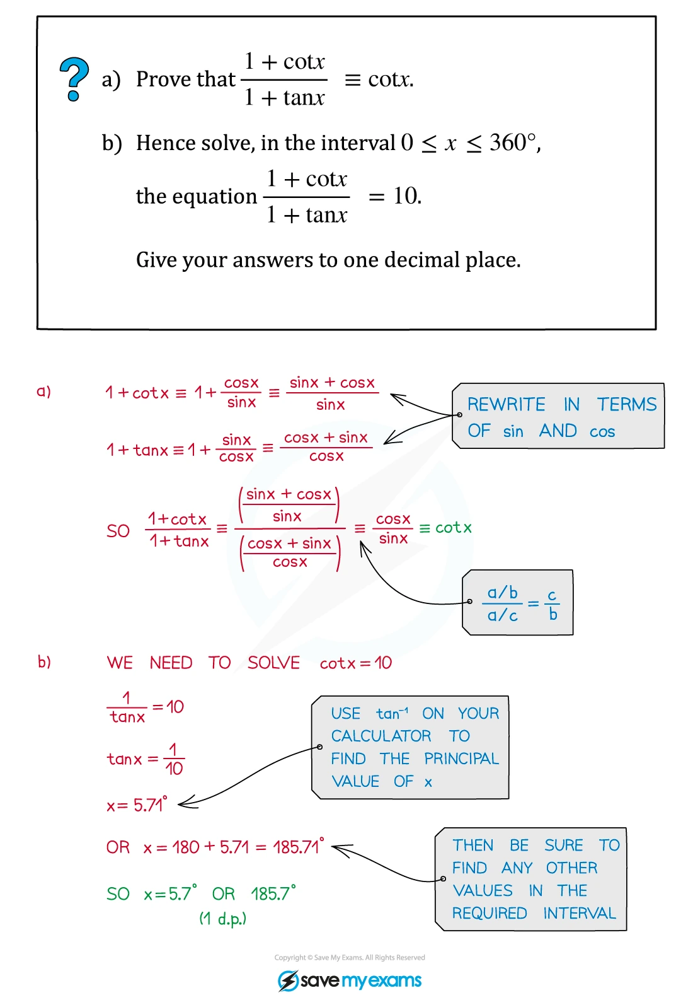
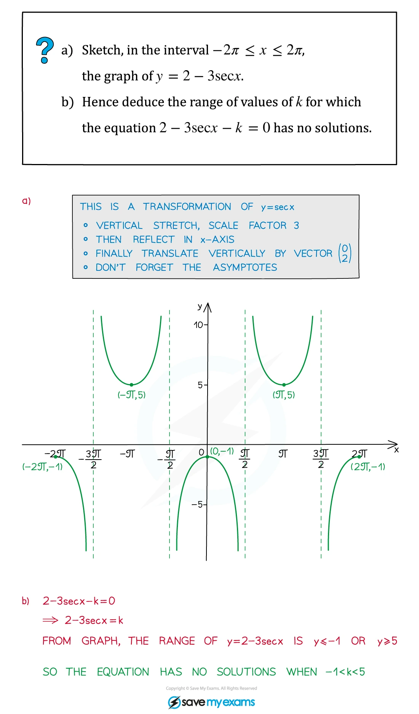
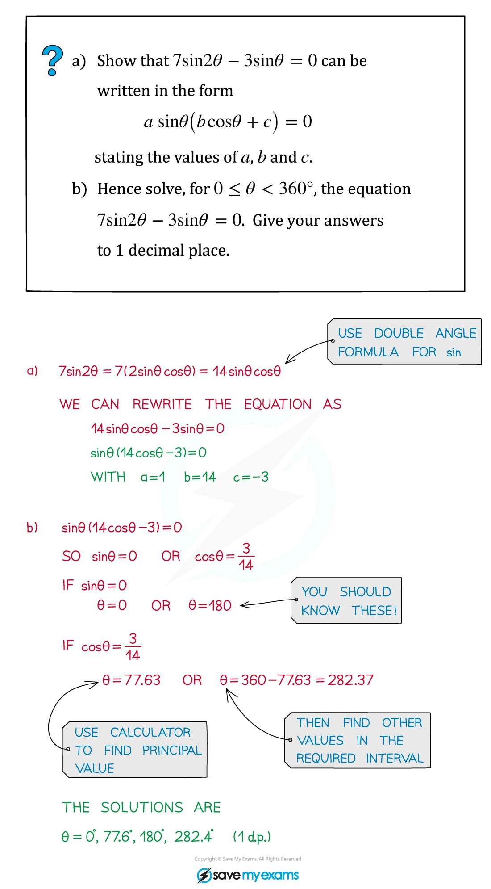

3. Trigonometry
Six trig functions · identities · compound angles · double angles · R-form
本页依据 9709 Mathematics 2026–2027 syllabus 3.3，覆盖：
- secant、cosecant、cotangent 的定义、定义域、值域与图像；
- 任意角度下六个三角函数的性质；
- 使用 \sec^2\theta=1+\tan^2\theta 与 \operatorname{cosec}^2\theta=1+\cot^2\theta；
- compound-angle formulae、double-angle formulae，以及三角恒等式的证明、化简和 exact evaluation；
- 解含有三角函数的 equations；
- 将 a\sin\theta+b\cos\theta 写成 R\sin(\theta\pm\alpha) 或 R\cos(\theta\pm\alpha)。
Learning objectives
1. Six trigonometric functions
Definitions and reciprocal relationships
除了 \sin x、\cos x、\tan x，还要掌握：
\sec x=\frac1{\cos x},\qquad \operatorname{cosec}x=\frac1{\sin x},\qquad \cot x=\frac1{\tan x}=\frac{\cos x}{\sin x}.
因此：
\tan^2x+1=\sec^2x, \qquad 1+\cot^2x=\operatorname{cosec}^2x.
使用这些式子时，要同时注意原始函数的定义域：\sec x 在 \cos x=0 时不存在，\operatorname{cosec}x 和 \cot x 在 \sin x=0 时不存在。
Worked example · 笔记第 3 页

这个例子展示了一个常见套路：先把 tan、cot 都改写成 sin、cos，约去共同因子，再在原区间内列出全部解。
Graph facts to remember
三种 reciprocal graphs 的关键性质如下。所有周期均按输入变量计算：
| Function | Period | Vertical asymptotes | Range |
|---|---|---|---|
| y=\sec x | 2\pi | x=\frac\pi2+k\pi | y\le -1 或 y\ge1 |
| y=\operatorname{cosec}x | 2\pi | x=k\pi | y\le -1 或 y\ge1 |
| y=\cot x | \pi | x=k\pi | all real numbers |
其中 k\in\mathbb Z。图像题要标出 asymptotes，不能把 reciprocal graph 画成平滑地穿过 asymptote 的曲线。
Worked example · 笔记第 7 页

2. Reciprocal identities and equations
Choosing the right substitution
看到 sec、cosec 或 cot 的高次式时，先用 reciprocal identities 把题目变成一个变量的 quadratic：
\sec^2\theta=1+\tan^2\theta, \qquad \operatorname{cosec}^2\theta=1+\cot^2\theta.
例如，若出现 9\sec^2\theta-11=3\tan\theta，令 t=\tan\theta，则
9(1+t^2)-11=3t \quad\Longrightarrow\quad 9t^2-3t-2=0.
解出 t 后，再根据给定区间和 tangent 的周期补齐 \theta。
Worked example · 笔记第 10 页

Worked example · 笔记第 24 页

3. Compound-angle formulae
Addition and subtraction formulae
必须熟练掌握：
\sin(A\pm B)=\sin A\cos B\pm\cos A\sin B,
\cos(A\pm B)=\cos A\cos B\mp\sin A\sin B,
\tan(A\pm B)=\frac{\tan A\pm\tan B}{1\mp\tan A\tan B}.
解 compound-angle equation 时，先确定 calculator 的 angle mode，再用 principal value 和 periodicity 找全区间解。不要把 \tan^{-1} 的一个 principal value 当成唯一答案。
Worked example · 笔记第 12 页

4. Double-angle formulae
The forms that are most useful in Paper 3
\sin2A=2\sin A\cos A,
\cos2A=\cos^2A-\sin^2A=2\cos^2A-1=1-2\sin^2A,
\tan2A=\frac{2\tan A}{1-\tan^2A}.
选择哪一种 \cos2A form，取决于题目希望最后得到 \sin A、\cos A 还是一个 quadratic。若要 factorise，先用 \sin2A=2\sin A\cos A 往往最直接。
Worked example · 笔记第 15 页

Worked example · 笔记第 28 页

5. R-form conversion
Converting a sine-cosine combination
若要写成
a\sin\theta+b\cos\theta=R\sin(\theta+\alpha),
展开右边并比较系数：
R\cos\alpha=a,\qquad R\sin\alpha=b,
所以
R=\sqrt{a^2+b^2},\qquad \tan\alpha=\frac ba.
同理，
a\cos\theta+b\sin\theta=R\cos(\theta-\alpha),
其中 R\cos\alpha=a、R\sin\alpha=b。
Worked example · 笔记第 19 页

转换后，R\sin(\theta+\alpha) 的 range 是 [-R,R]。这可以直接回答 maximum/minimum questions，也能把 equation 化为一个 standard sine equation。
6. Paper 3 past-paper questions
本节精选 20 道 2020–2024 Paper 3 中与 Trigonometry 直接相关的题目。题目保留原题的数学条件、区间和精度要求；答案按 matching mark scheme 展开，并在容易丢分处补充 domain、periodicity 和 invalid roots 的检查。
Compound angles and R-form
Example 1 · Compound-angle equation · 9709/31/M/J/20 Q3
tan additionquadratic
Express the equation \tan(\theta+60^\circ)=2+\tan(60^\circ-\theta) as a quadratic equation in \tan\theta, and hence solve the equation for 0^\circ\le\theta\le180^\circ. [6]
Show detailed mark scheme answer
令 t=\tan\theta。由 compound-angle formula，
\tan(\theta+60^\circ)=\frac{t+\sqrt3}{1-\sqrt3t}, \qquad \tan(60^\circ-\theta)=\frac{\sqrt3-t}{1+\sqrt3t}.
代回原式并通分，化简得到
3t^2+4t-1=0.
所以
t=\frac{-2\pm\sqrt7}{3}.
分别取 tangent 的反函数并按区间补解：
\theta=\tan^{-1}\left(\frac{-2+\sqrt7}{3}\right)=12.147...^\circ,
\theta=180^\circ+\tan^{-1}\left(\frac{-2-\sqrt7}{3}\right)=122.852...^\circ.
因此 \boxed{\theta=12.1^\circ,\ 122.9^\circ}。PastPaper/2020/2020/9709-s20-qp-31.pdf and matching 9709-s20-ms-31.pdf.
Example 2 · R-form and equation · 9709/32/M/J/20 Q5
R-formdegrees
Express 2\cos x-5\sin x in the form R\cos(x+\phi), where R>0 and 0^\circ<\phi<90^\circ. Give the exact value of R and the value of \phi correct to 3 decimal places.
Hence solve the equation 2\cos2\theta-5\sin2\theta=1, for 0^\circ<\theta<180^\circ. [7]
Show detailed mark scheme answer
- 展开
R\cos(x+\phi)=R\cos\phi\cos x-R\sin\phi\sin x.
比较系数：R\cos\phi=2、R\sin\phi=5。因此
R=\sqrt{2^2+5^2}=\sqrt{29}, \qquad \tan\phi=\frac52,
so \boxed{R=\sqrt{29},\ \phi=68.199^\circ}。
- 令 u=2\theta，方程变为
\sqrt{29}\cos(u+\phi)=1.
令 \beta=\cos^{-1}(1/\sqrt{29})=79.298...^\circ。由于 0^\circ<u<360^\circ，
u+\phi=\beta\quad\text{or}\quad u+\phi=360^\circ-\beta.
因此
\theta=\frac{\beta-\phi}{2}=5.550...^\circ, \qquad \theta=\frac{360^\circ-\beta-\phi}{2}=106.252...^\circ.
答案为 \boxed{\theta=5.55^\circ,\ 106.25^\circ}。PastPaper/2020/2020/9709-s20-qp-32.pdf and matching mark scheme.
Example 3 · R-form and restricted interval · 9709/31/O/N/20 Q6
R-forminterval
Express 6\cos x+3\sin x in the form R\cos(x-\phi), where R>0 and 0^\circ<\phi<90^\circ. State the exact value of R and give \phi correct to 2 decimal places.
Hence solve the equation 6\cos\frac{x}{3}+3\sin\frac{x}{3}=2.5, for 0^\circ<x<360^\circ. [7]
Show detailed mark scheme answer
- 比较
R\cos(x-\phi)=R\cos\phi\cos x+R\sin\phi\sin x.
故 R\cos\phi=6、R\sin\phi=3，从而
\boxed{R=3\sqrt5}, \qquad \boxed{\phi=\tan^{-1}(1/2)=26.57^\circ}.
- 令 u=x/3，则 0^\circ<u<120^\circ，且
3\sqrt5\cos(u-\phi)=2.5.
令 \beta=\cos^{-1}\left(\frac{2.5}{3\sqrt5}\right)=68.119...^\circ。候选值为 u=\phi\pm\beta，但 \phi-\beta<0^\circ 不在区间内，只有
u=\phi+\beta=94.684...^\circ.
所以 \boxed{x=3u=284.1^\circ}。PastPaper/2020/2020/9709_w20_qp_31.pdf and matching mark scheme.
Example 4 · Tangent addition equation · 9709/32/O/N/20 Q4
tan additionquadratic
- Show that the equation \tan(\theta+60^\circ)=2\cot\theta can be written in the form
\tan^2\theta+3\sqrt3\tan\theta-2=0.
- Hence solve the equation \tan(\theta+60^\circ)=2\cot\theta, for 0^\circ<\theta<180^\circ. [6]
Show detailed mark scheme answer
令 t=\tan\theta。则
\frac{t+\sqrt3}{1-\sqrt3t}=\frac2t.
交叉相乘：
t(t+\sqrt3)=2(1-\sqrt3t) \Longrightarrow t^2+3\sqrt3t-2=0.
所以
t=\frac{-3\sqrt3\pm\sqrt{35}}2.
两个根分别给出
\theta=\tan^{-1}(0.3599...)=19.797...^\circ,
以及第三象限对应的
\theta=180^\circ+\tan^{-1}(-5.556...)=100.203...^\circ.
因此 \boxed{\theta=19.8^\circ,\ 100.2^\circ}。PastPaper/2020/2020/9709_w20_qp_32.pdf and matching mark scheme.
Example 5 · Maximum and minimum · 9709/31/O/N/21 Q2
R-formrange
Express 5\sin x-3\cos x in the form R\sin(x-\phi), where R>0 and 0<\phi<\frac12\pi. Give the exact value of R and the value of \phi correct to 2 decimal places.
Hence state the greatest and least possible values of (5\sin x-3\cos x)^2. [5]
Show detailed mark scheme answer
由
R\sin(x-\phi)=R\cos\phi\sin x-R\sin\phi\cos x,
比较系数得 R\cos\phi=5、R\sin\phi=3。所以
R=\sqrt{34},\qquad \phi=\tan^{-1}(3/5)=30.96^\circ.
故 5\sin x-3\cos x 的 range 是 [-\sqrt{34},\sqrt{34}]。平方后
0\le(5\sin x-3\cos x)^2\le34.
因此 least value 为 \boxed0，greatest value 为 \boxed{34}。PastPaper/2021/2021/9709_w21_qp_31.pdf and matching mark scheme.
Example 6 · Double-angle substitution · 9709/33/O/N/21 Q5
double anglequadratic
Solve the equation \sin\theta=3\cos2\theta+2, for 0^\circ\le\theta\le360^\circ. [5]
Show detailed mark scheme answer
令 s=\sin\theta，并使用 \cos2\theta=1-2\sin^2\theta：
s=3(1-2s^2)+2 \Longrightarrow 6s^2+s-5=0.
因式分解：
(6s-5)(s+1)=0.
所以 s=5/6 或 s=-1。在 0^\circ\le\theta\le360^\circ 内，
\sin\theta=\frac56 \Longrightarrow \theta=\sin^{-1}(5/6)=56.443^\circ
或 180^\circ-56.443^\circ=123.557^\circ；而 \sin\theta=-1 给出 \theta=270^\circ。
答案为 \boxed{\theta=56.4^\circ,\ 123.6^\circ,\ 270^\circ}。PastPaper/2021/2021/9709_w21_qp_33.pdf and matching mark scheme.
Example 7 · Double-angle tangent identity · 9709/33/M/J/21 Q5
double angletan
- By first expanding \tan(2\theta+2\theta), show that the equation \tan4\theta=\frac12\tan\theta may be expressed as
\tan^4\theta+2\tan^2\theta-7=0.
- Hence solve the equation \tan4\theta=\frac12\tan\theta, for 0^\circ<\theta<180^\circ. [7]
Show detailed mark scheme answer
令 t=\tan\theta。先令 u=\tan2\theta=2t/(1-t^2)，再使用 \tan4\theta=2u/(1-u^2)，得到
\tan4\theta=\frac{4t(1-t^2)}{1-6t^2+t^4}.
代入 \tan4\theta=\frac12t，并整理：
\frac{4t(1-t^2)}{1-6t^2+t^4}=\frac12t \Longrightarrow 8(1-t^2)=1-6t^2+t^4,
所以
t^4+2t^2-7=0.
令 v=t^2，则 v^2+2v-7=0，故
t^2=-1+2\sqrt2
（另一个根为负，不可作为 t^2）。因此 t=\pm\sqrt{-1+2\sqrt2}。
在给定区间内，两个 tangent roots 给出
\theta=\tan^{-1}\!\sqrt{-1+2\sqrt2}=53.516^\circ,
以及第二象限的 180^\circ-53.516^\circ=126.484^\circ。
答案为 \boxed{\theta=53.5^\circ,\ 126.5^\circ}。PastPaper/2021/2021/9709_s21_qp_33.pdf and matching 9709_s21_ms_33.pdf.
Reciprocal identities and double-angle equations
Example 8 · Cotangent double angle · 9709/31/M/J/22 Q3
cotdouble angle
Solve the equation 2\cot2x+3\cot x=5, for 0^\circ<x<180^\circ. [6]
Show detailed mark scheme answer
令 t=\cot x。由
\cot2x=\frac{\cot^2x-1}{2\cot x}=\frac{t^2-1}{2t},
原方程变为
2\left(\frac{t^2-1}{2t}\right)+3t=5.
乘以 t 并整理：
t^2-1+3t^2=5t \Longrightarrow 4t^2-5t-1=0.
因此
t=\frac{5\pm\sqrt{41}}8.
代回 t=\cot x，并按 0^\circ<x<180^\circ 的 quadrant sign 检查，得到
\boxed{x=35.1^\circ,\ 99.9^\circ}.PastPaper/2022/2022/9709_s22_qp_31.pdf and matching mark scheme.
Example 9 · Cosine double angle · 9709/32/M/J/22 Q2
cos double anglequadratic
Solve the equation 3\cos2\theta=3\cos\theta+2, for 0^\circ\le\theta\le360^\circ. [5]
Show detailed mark scheme answer
令 c=\cos\theta，使用 \cos2\theta=2c^2-1：
3(2c^2-1)=3c+2 \Longrightarrow 6c^2-3c-5=0.
解得
c=\frac{3\pm\sqrt{129}}{12}.
其中 \frac{3+\sqrt{129}}{12}>1，不是 cosine 的可能值，舍去；保留
\cos\theta=\frac{3-\sqrt{129}}{12}=-0.69648... .
在第二、三象限：
\theta=\cos^{-1}(-0.69648...)=134.146...^\circ,
以及 360^\circ-134.146...^\circ=225.854...^\circ。
答案为 \boxed{\theta=134.1^\circ,\ 225.9^\circ}。PastPaper/2022/2022/9709_s22_qp_32.pdf and matching mark scheme.
Example 10 · Tangent addition and cotangent · 9709/31/O/N/22 Q4
tan additionquadratic
Solve the equation \tan(x+45^\circ)=2\cot x for 0^\circ<x<180^\circ. [5]
Show detailed mark scheme answer
令 t=\tan x。由 \tan45^\circ=1：
\frac{t+1}{1-t}=\frac2t.
交叉相乘并整理：
t(t+1)=2(1-t) \Longrightarrow t^2+3t-2=0.
所以
t=\frac{-3\pm\sqrt{17}}2.
两个根分别给出第一象限和第三象限的解：
x=\tan^{-1}(0.56155...)=29.3165...^\circ,
x=180^\circ+\tan^{-1}(-3.56155...)=105.6835...^\circ.
因此 \boxed{x=29.3^\circ,\ 105.7^\circ}。PastPaper/2022/2022/9709_w22_qp_31.pdf and matching mark scheme.
Example 11 · Identity and quartic reduction · 9709/31/O/N/22 Q6
identityquadratic
Prove the identity \cos4\theta+4\cos2\theta+3\equiv8\cos^4\theta.
Hence solve the equation \cos4\theta+4\cos2\theta=4 for 0^\circ\le\theta\le180^\circ. [7]
Show detailed mark scheme answer
- 令 u=\cos2\theta。由 \cos4\theta=2\cos^22\theta-1，
\cos4\theta+4\cos2\theta+3 =(2u^2-1)+4u+3 =2(u+1)^2.
而 u+1=\cos2\theta+1=2\cos^2\theta，所以
2(u+1)^2=2(2\cos^2\theta)^2=8\cos^4\theta.
这就证明了题目的 identity。
- 由 (a)，原方程加 3 后为
8\cos^4\theta=7 \Longrightarrow \cos^2\theta=\left(\frac78\right)^{1/2}.
故
\cos\theta=\pm\left(\frac78\right)^{1/4}.
在 0^\circ\le\theta\le180^\circ 内，
\theta=\cos^{-1}\left(\frac78\right)^{1/4}=14.722...^\circ
或其补角 180^\circ-14.722...^\circ=165.278...^\circ。
答案为 \boxed{\theta=14.7^\circ,\ 165.3^\circ}。PastPaper/2022/2022/9709_w22_qp_31.pdf and matching mark scheme.
Mixed R-form and identity practice
Example 12 · R-form in radians · 9709/32/M/J/23 Q6
R-formradians
Express 5\sin\theta+12\cos\theta in the form R\cos(\theta-\alpha), where R>0 and 0<\alpha<\frac12\pi. State the exact value of R and give \alpha correct to 2 decimal places.
Hence solve the equation 5\sin2x+12\cos2x=6 for 0\le x\le\pi. [7]
Show detailed mark scheme answer
由
R\cos(\theta-\alpha)=R\cos\alpha\cos\theta+R\sin\alpha\sin\theta,
比较系数得 R\cos\alpha=12、R\sin\alpha=5，所以
\boxed{R=13},\qquad \boxed{\alpha=\tan^{-1}(5/12)=0.39\text{ rad}}.
令 u=2x，则 0\le u\le2\pi，方程为
13\cos(u-\alpha)=6.
设 \beta=\cos^{-1}(6/13)=1.09107...。在 0\le u\le2\pi 内，
u-\alpha=\beta\quad\text{或}\quad u-\alpha=2\pi-\beta.
故
x=\frac{\alpha+\beta}{2}=0.74293..., \qquad x=\frac{\alpha+2\pi-\beta}{2}=2.79345... .
答案为 \boxed{x=0.743,\ 2.793} radians。PastPaper/2023/2023/9709_m23_qp_32.pdf and matching mark scheme.
Example 13 · Double-angle rearrangement · 9709/31/M/J/23 Q4
double angletan
- Show that the equation \sin2\theta+\cos2\theta=2\sin^2\theta can be expressed in the form
\cos^2\theta+2\sin\theta\cos\theta-3\sin^2\theta=0.
- Hence solve the equation \sin2\theta+\cos2\theta=2\sin^2\theta for 0^\circ<\theta<180^\circ. [7]
Show detailed mark scheme answer
使用 \sin2\theta=2\sin\theta\cos\theta 及 \cos2\theta=\cos^2\theta-\sin^2\theta：
2\sin\theta\cos\theta+\cos^2\theta-\sin^2\theta=2\sin^2\theta,
即
\cos^2\theta+2\sin\theta\cos\theta-3\sin^2\theta=0.
由于区间内 \cos\theta=0 的 \theta=90^\circ 不满足原式，除以 \cos^2\theta，令 t=\tan\theta：
1+2t-3t^2=0 \Longrightarrow (t-1)(3t+1)=0.
因此 t=1 或 t=-1/3，给出
\boxed{\theta=45^\circ,\ 161.6^\circ}.PastPaper/2023/2023/9709_s23_qp_31.pdf and matching mark scheme.
Example 14 · Half-angle substitution · 9709/32/M/J/23 Q2
double angleradians
Solve the equation 2\cos x-\cos\frac12x=1 for 0\le x\le2\pi. [5]
Show detailed mark scheme answer
令 u=x/2，则 x=2u 且 0\le u\le\pi。原式变为
2\cos2u-\cos u=1.
令 c=\cos u，用 \cos2u=2c^2-1：
2(2c^2-1)-c=1 \Longrightarrow 4c^2-c-3=0 \Longrightarrow (4c+3)(c-1)=0.
根 c=1 或 c=-3/4 都在 cosine 的值域内。故
u=0\quad\text{or}\quad u=\cos^{-1}(-3/4),
所以
\boxed{x=0,\quad x=2\cos^{-1}(-3/4)=4.838\text{ rad}}.PastPaper/2023/2023/9709_s23_qp_32.pdf and matching mark scheme.
Example 15 · Shifted cosine R-form · 9709/33/M/J/23 Q6
R-formcompound angle
Express 3\cos x+2\cos(x-60^\circ) in the form R\cos(x-\phi), where R>0 and 0^\circ<\phi<90^\circ. State the exact value of R and give \phi correct to 2 decimal places.
Hence solve the equation 3\cos2\theta+2\cos(2\theta-60^\circ)=2.5 for 0^\circ<\theta<180^\circ. [8]
Show detailed mark scheme answer
先展开：
2\cos(x-60^\circ)=2\left(\frac12\cos x+\frac{\sqrt3}{2}\sin x\right)=\cos x+\sqrt3\sin x.
所以原式为 4\cos x+\sqrt3\sin x。写成 R\cos(x-\phi)：
R\cos\phi=4,\qquad R\sin\phi=\sqrt3,
从而
\boxed{R=\sqrt{19}},\qquad \boxed{\phi=\tan^{-1}(\sqrt3/4)=23.41^\circ}.
- 令 u=2\theta，则 0^\circ<u<360^\circ：
\sqrt{19}\cos(u-\phi)=2.5.
设 \beta=\cos^{-1}(2.5/\sqrt{19})=55.003^\circ。因此
u=\phi+\beta=78.416^\circ \quad\text{or}\quad u=\phi+360^\circ-\beta=328.410^\circ.
所以
\boxed{\theta=39.2^\circ,\ 164.2^\circ}.PastPaper/2023/2023/9709_s23_qp_33.pdf and matching mark scheme.
2024 Paper 3 identities and R-form
Example 16 · R-form with radians · 9709/32/F/M/24 Q8
R-formradians
Express 3\sin x+2\sqrt2\cos\left(x+\frac14\pi\right) in the form R\sin(x+\alpha), where R>0 and 0<\alpha<\frac12\pi. State the exact value of R and give \alpha correct to 3 decimal places.
Hence solve the equation
6\sin\frac12\theta+4\sqrt2\cos\left(\frac12\theta+\frac14\pi\right)=3
for -4\pi<\theta<4\pi. [9]
Show detailed mark scheme answer
- 因为
2\sqrt2\cos\left(x+\frac\pi4\right)=2(\cos x-\sin x)，
所以表达式为 \sin x+2\cos x。比较 R\sin(x+\alpha) 的系数：
R\cos\alpha=1,\qquad R\sin\alpha=2.
因此
\boxed{R=\sqrt5},\qquad \boxed{\alpha=\tan^{-1}2=1.107\text{ rad}}.
- 令 u=\theta/2。同样的展开给出
6\sin u+4\sqrt2\cos\left(u+\frac\pi4\right)=2\sin u+4\cos u =2\sqrt5\sin(u+\alpha).
所以
\sin(u+\alpha)=\frac3{2\sqrt5}.
设 \beta=\sin^{-1}(3/(2\sqrt5))=0.735314...，且 -2\pi<u<2\pi。由
u+\alpha=\beta+2k\pi \quad\text{or}\quad u+\alpha=\pi-\beta+2k\pi
筛选区间后，\theta=2u 为
\boxed{\theta=-9.968,\ -0.744,\ 2.598,\ 11.823}\quad\text{radians}.
按题目要求可写为 \boxed{-9.97,\ -0.744,\ 2.60,\ 11.8}。PastPaper/2024/2024/A-Level-CAIE数学QP-202403-Mathematics-P32-A-Level题库大全小程序.pdf and matching mark scheme.
Example 17 · Difference of fourth powers · 9709/32/M/J/24 Q7(a)
identitydouble angle
Show that \cos^4\theta-\sin^4\theta\equiv\cos2\theta. [3]
Show detailed mark scheme answer
使用 difference of squares：
\cos^4\theta-\sin^4\theta =(\cos^2\theta-\sin^2\theta)(\cos^2\theta+\sin^2\theta).
由 \cos^2\theta+\sin^2\theta=1 以及 \cos^2\theta-\sin^2\theta=\cos2\theta，得到
\boxed{\cos^4\theta-\sin^4\theta\equiv\cos2\theta}.PastPaper/2024/2024/A-Level-CAIE数学QP-202406-Mathematics-P32-A-Level题库大全小程序.pdf and matching mark scheme.
Example 18 · Secant and tangent identity · 9709/31/O/N/24 Q4
secquartic
Show that \sec^4\theta-\tan^4\theta=1+2\tan^2\theta.
Hence or otherwise solve the equation
\sec^4(2\alpha)-\tan^4(2\alpha)=2\tan^2(2\alpha)\sec^2(2\alpha)
for 0^\circ\le\alpha\le180^\circ. [8]
Show detailed mark scheme answer
\sec^4\theta-\tan^4\theta =(\sec^2\theta-\tan^2\theta)(\sec^2\theta+\tan^2\theta).
由 \sec^2\theta-\tan^2\theta=1，且 \sec^2\theta=1+\tan^2\theta，
\sec^4\theta-\tan^4\theta=1(1+2\tan^2\theta).
- 令 t=\tan2\alpha。左边由 (a) 为 2+2t^2，右边为
2t^2\sec^2(2\alpha)=2t^2(1+t^2).
所以
2+2t^2=2t^2+2t^4 \Longrightarrow t^4=1 \Longrightarrow t=\pm1.
因为 0^\circ\le2\alpha\le360^\circ，所以 2\alpha=45^\circ,135^\circ,225^\circ,315^\circ，从而
\boxed{\alpha=22.5^\circ,\ 67.5^\circ,\ 112.5^\circ,\ 157.5^\circ}.PastPaper/2024/2024/A-Level-CAIE数学QP-202410-Mathematics-P31-A-Level题库大全小程序.pdf and matching mark scheme.
Example 19 · Identity followed by quadratic · 9709/33/O/N/24 Q5
identitycos double angle
- Show that
\cos^4\alpha-\sin^4\alpha-4\sin^2\alpha\cos^2\alpha \equiv\cos^22\alpha+\cos2\alpha-1.
- Solve the equation \cos^4\alpha-\sin^4\alpha=4\sin^2\alpha\cos^2\alpha for 0^\circ\le\alpha\le180^\circ. [6]
Show detailed mark scheme answer
- 先使用 Example 17 的恒等式：
\cos^4\alpha-\sin^4\alpha=\cos2\alpha,
以及
4\sin^2\alpha\cos^2\alpha=(2\sin\alpha\cos\alpha)^2=\sin^22\alpha.
因此
\cos2\alpha-\sin^22\alpha =\cos2\alpha-(1-\cos^22\alpha) =\cos^22\alpha+\cos2\alpha-1.
- 将原方程移到左边并用 (a)：
\cos^22\alpha+\cos2\alpha-1=0.
令 u=\cos2\alpha，则 u^2+u-1=0，故
u=\frac{-1\pm\sqrt5}{2}.
负根小于 -1，舍去，保留 u=(\sqrt5-1)/2。于是
2\alpha=\cos^{-1}\left(\frac{\sqrt5-1}{2}\right) \quad\text{or}\quad 360^\circ-\cos^{-1}\left(\frac{\sqrt5-1}{2}\right).
所以 \boxed{\alpha=25.9^\circ,\ 154.1^\circ}。PastPaper/2024/2024/A-Level-CAIE数学QP-202410-Mathematics-P33-A-Level题库大全小程序.pdf and matching mark scheme.
Example 20 · R-form equation · 9709/32/O/N/22 Q4
R-formdegrees
Express 4\cos x-\sin x in the form R\cos(x+\phi), where R>0 and 0^\circ<\phi<90^\circ.
Hence solve the equation 4\cos2x-\sin2x=3 for 0^\circ<x<180^\circ. [7]
Show detailed mark scheme answer
- 展开 R\cos(x+\phi)=R\cos\phi\cos x-R\sin\phi\sin x，比较系数得
R\cos\phi=4,\qquad R\sin\phi=1.
所以
\boxed{R=\sqrt{17}},\qquad \boxed{\phi=\tan^{-1}(1/4)=14.036^\circ}.
- 令 u=2x，则 0^\circ<u<360^\circ：
\sqrt{17}\cos(u+\phi)=3.
令 \beta=\cos^{-1}(3/\sqrt{17})=42.977...^\circ。由于 u+\phi 的范围为 14.036^\circ<u+\phi<374.036^\circ，两个有效角为
u+\phi=\beta \quad\text{或}\quad u+\phi=360^\circ-\beta.
因此
x=\frac{\beta-\phi}{2}=14.470...^\circ, \qquad x=\frac{360^\circ-\beta-\phi}{2}=151.493...^\circ.
答案为 \boxed{x=14.5^\circ,\ 151.5^\circ}。PastPaper/2022/2022/9709_s22_qp_32.pdf and matching mark scheme.
- 先确认题目用的是 degrees 还是 radians，并保持 calculator mode 一致。
- 用 R-form 时先比较 coefficients，再求 R 和 \alpha，不要只凭图像猜角度。
- 把三角方程化成 quadratic 后，检查 roots 是否在 [-1,1]（若是 sine/cosine）或是否违反原式 domain。
- 用 inverse trig 得到 principal value 后，按 quadrant、period 和题目 interval 补齐全部答案。
- 若除以 \sin\theta、\cos\theta 或 \tan\theta，要先检查被除数为零的情况，避免漏解。